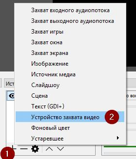
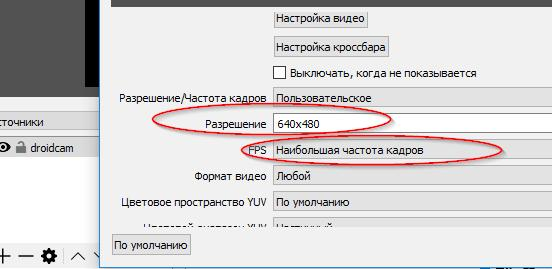
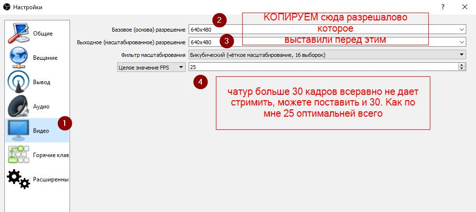
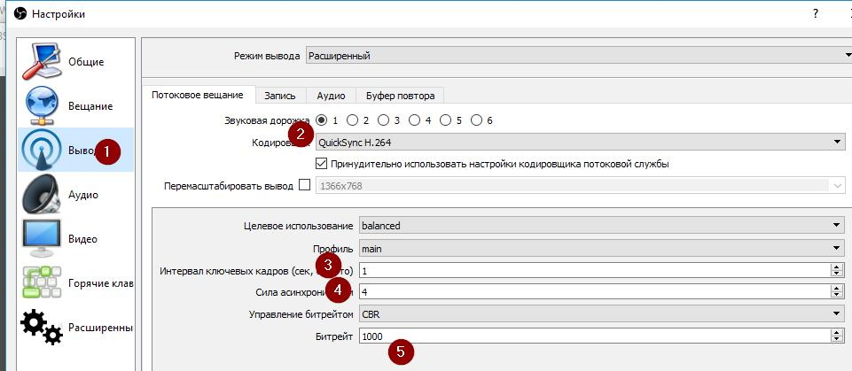
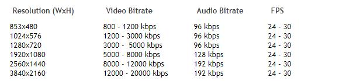
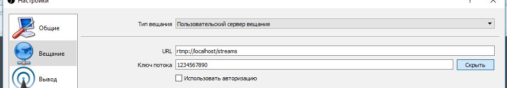

У тебя оно может быть, и скорее будет, другим - 720p, 1080p и т.д. 

Тут просто ставим наше желаемое разрешалово. Я ставлю такое в каком передает дроидкам, ибо юзаю мобилочку как камеру. Если надо то про мобилочку в качестве камеры напишу отдельно. Все ж пижже качество чем от всратой камеры ноута. UPD 13.11.2017
На данный момент у меня такое решение с вебкой.
--- Про частоту кадров я не уверен в настройках. Но ебанул как на скринах в хелпе от cam4. 

Кодек этот ставить конечно пижже всего. Он аппаратный, и не ебет ваш проц. Ну если совсем днищекомп то скорее всего он будет недоступен,
я особо в этом не шарю, мб потом дополню эту часть. UPD 10.11.2017
По поводу кодировщиков и того что мне удалось нагуглить. Они бывают програмными (x264) - дают лучшее качество но жрут процессор сильно,
и аппаратные (QuickSync на процах интел, и еще есть на видеокартах амуде - h.264/avc, тут какой-то плагин есть для этого,
но у меня на буке чот не хотит запускаться, и на нвидиа - NVENC). Аппаратные кодировщики жертвуют качеством ради производительности.
Но мы тут не видео обрабатываем, а сиськи письки стримим, потому для нас это идеальный вариант.
В общем, если у вас доступен для выбора только x264 - то особого смысла использовать OBS я не вижу, так как уже на 720p
и пресете faster или fast нагрузка на проц у меня была в районе 60-70%.
Хотя с другой стороны, скорее всего качество картинки будет пижже чем при использовании обычного флешплеерного кодировщика.
Опять же, можно поиграться с этими пресетами и добиться вменяемого качества и не такой большой нагрузки на проц.
Но мне если чесно даже лень в этом ковыряться, что бы вам тут все порасписывать.
Сейчас настройки у меня выглядят так:
Немного добавил битрейта согласно хелпам сайтов и выставил куолити вместо балансед.

--- Битрейт для вашего разрешалова берем отсюда (с хелпа чатура). 
Аудио битрейт я по дефолту оставил 160, и как бы похуй. 
/streams это то что в конфиге указано. Токен — любой. Мой конфиг nginx - https://pastebin.com/GjypZs84 Обратите внимание на хуйню для cam4.В каментах конфига я написал и еще раз здесь продублирую.
Без flashVer="FMLE/3.0" cam4 у меня напрочь отказывался работать. Обсуждаем мою писанину здесь - https://2ch.hk/wrk/res/1093466.htm Если хочется задать вопрос здесь и сейчас - у меня есть jabber